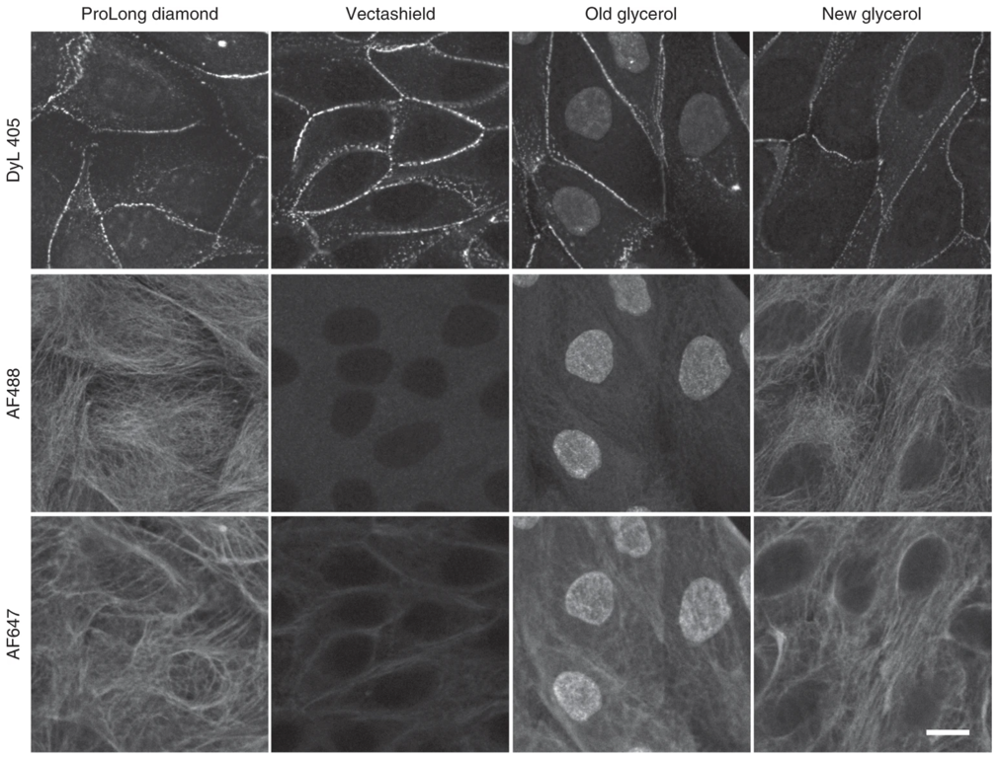

実験デザイン#
定量的バイオイメージング実験を計画する際には、いくつもの重要な選択を行う必要があります。これらの多くは、研究対象とする生物学的現象や、その系で実際に可能な操作に大きく依存します。例えば、
ある過程の時間的な変化を評価することが重要な場合には、固定標本よりもライブイメージングが望ましいです。
比較的不透明な試料の深部を観察することが重要な場合には、組織透明化などの特別な処理が必要になることがあります。
モデル系が遺伝学的操作に適していない場合には、蛍光タンパク質による遺伝子タグ付けに頼ることはできません。
同一試料内で2つの分子間の相互作用を確実に評価するためには、特に高い空間分解能での撮像が必要になります。
したがって、ピペットやスライドを手に取る前に、自分の生物学的な問いについてあらゆる側面を十分に検討しておくことが_きわめて重要_です。試料調製に関する多くの判断は、利用可能な顕微鏡の種類や、その顕微鏡が目的に適しているかどうかと密接に関係しています。詳しくは顕微鏡の選択のセクションを参照してください。
試料のマウント#
カバーガラス#
多くのイメージング実験では、試料をガラス製カバーガラス上にマウントします。これは直接載せる場合もあれば、カバーガラスが組み込まれたディッシュを使用する場合もあります。カバーガラスにはさまざまなサイズや形状がありますが、最も重要なのはその厚さです。カバーガラスの規格は、想定される厚さとその許容誤差（ばらつきの範囲）を示しています。これは重要な点です。というのも、多くの顕微鏡メーカーは、対物レンズの設計において、収差を最小限に抑えるために特定のカバーガラス厚（通常 0.17 mm）を前提としているからです。収差が生じると、画像の明るさや軸方向の分解能に影響が出て、S/N比、鮮明さ、分解能が低下します。特に、超解像法や高開口数の対物レンズを用いた強度測定では、カバーガラスの厚さのばらつきを最小限に抑えることが重要です。一方で、すべての観察がガラスやプラスチックへのマウントを必要とするわけではありません。用途によっては、試料と対物レンズを同じ媒質中に浸して観察する方法もあります。
規格 |
公称厚さ [mm] |
厚さの範囲 [mm] |
|---|---|---|
#1.5 |
0.17 |
0.16 - 0.19 |
#1.5H |
0.17 |
0.165 - 0.175 |
封入剤#
試料を置く媒質の屈折率、ガラスの屈折率、さらに対物レンズと試料の間にある媒質の屈折率は、達成できる分解能を左右する重要な要素です。封入剤は、他にも光学的特性や実験条件に影響を与えるさまざまな性質を持っています。そのため、計画している実験に適した封入剤を選択することが重要です。
{kind=link}

図 3 様々な蛍光色素による染色に対する封入剤の影響. Jonkman J., Brown C.M., Wright G.D et al. Tutorial: guidance for quantitative confocal microscopy. Nat Prot 15, (2020) 5 より。#
蛍光色素の選択#
蛍光色素は、光子を吸収すると発光する分子で、通常は吸収した光よりも長い波長の光を放出します。生物医学研究で用いられる蛍光色素には、低分子の有機色素（例：FITC、Alexa Fluor 488）特定の細胞構造に結合する分子（例：DAPI、MitoTracker）、低分子の蛍光アナログ（例：ファロイジン、蛍光アミノ酸）、および蛍光タンパク質などがあります。蛍光色素を選択する際に考慮すべき重要な特性を、以下に示します。
各蛍光色素の励起／発光スペクトル
明るさ（一般に、低分子色素は蛍光タンパク質よりも明るい傾向があります）
光安定性
オリゴマー化のしやすさ（蛍光タンパク質の場合）
光毒性（生きた試料を観察する場合）
蛍光色素の特性（多重染色の場合はその組み合わせを含めて）、顕微鏡の仕様（光源、フィルター、検出器）、そして解析の目的を理解することが、科学的な問いに適した蛍光色素を選択するうえで重要です。詳しくは、再現性 のセクションを参照してください。